PSTAT 100: Lecture 14
Simple Linear Regression
Department of Statistics and Applied Probability; UCSB
Summer Session A, 2025
\[ \newcommand\R{\mathbb{R}} \newcommand{\N}{\mathbb{N}} \newcommand{\E}{\mathbb{E}} \newcommand{\Prob}{\mathbb{P}} \newcommand{\F}{\mathcal{F}} \newcommand{\1}{1\!\!1} \newcommand{\comp}[1]{#1^{\complement}} \newcommand{\Var}{\mathrm{Var}} \newcommand{\SD}{\mathrm{SD}} \newcommand{\vect}[1]{\vec{\boldsymbol{#1}}} \newcommand{\Cov}{\mathrm{Cov}} \DeclareMathOperator*{\argmin}{\mathrm{arg} \ \min} \newcommand{\iid}{\stackrel{\mathrm{i.i.d.}}{\sim}} \]
Recap
Statistical Modeling
- Yesterday, we discussed the general framework of statistical models.
- We discussed this in the context of one random variable (e.g. modeling flips of a coin), and two variables (regression and classification).
- Given a response
yand an explanatory variablex, the most general form for a model isy=f(x) +noise- For instance, we explored how the median selling price of a house in 2014 can be modeled as a function of the year in which it was built.
- Regression models arise when the response is numerical; classification models arise when the response is categorical.
Recap
Types of Statistical Models
Check Your Understanding
Identify the following situations as either regression or classification:
Predicting the birth weight of a newborn from the mothers’ height, blood type, and white blood cell count
Predicting whether or not a newborn will be born with a congenital heart defect or not, based on the mother and fathers’ health history.
Describing the relationship between the number of accidents on a stretch of highway and: the number of cars driving, the speed limit, and the time of day.
Penguins
An Example

The
penguinsdataset, from thepalmerpenguinspackage, contains information on 344 penguins, collected by Dr. Kristen Gorman, at the Palmer Research Station in Antarctica.Three species of penguins were observed: Adélie, Chinstrap, and Gentoo
Various characteristics of each penguin were also observed, including: flipper length, bill length, bill depth, sex, and island.
It seems plausible that a penguin’s bill length should be related to its body mass.

Penguins
An Example
- Based on our discussions from Week 1:
- Is there a trend?
- Increasing or decreasing?
- Linear or nonlinear?
- If we model Bill Length (response) as a function of Body Mass (predictor), would this be a regression or a classification model?
Penguins
Step 1: Propose a Model
yi = β0 + β1 xi + εi
yi= ithBill Lengthmeasurementxi= ithBody Massmeasurement- εi = ith (aleatoric) noise term
- We simply assume, for now, that the noise is mean zero (ùîº[Œµi] = 0 for all i) and homoskedastic (constant variance; Var(Œµi) = œÉ2, across all i)
Simple Linear Regression Model
Step 1: Propose a Model
yi = β0 + β1 xi + εi
yi= ith response measurementxi= ith predictor measurement- εi = ith (aleatoric) noise term; zero-mean and homoskedastic
- Called the Simple Linear Regression (SLR) model.
- Simple: only one covariate
- Linear: we are assuming a linear signal function
- Regression: well, you tell me!
Simple Linear Regression Model
As Applied to the Palmerpenguins Dataset
- Essentially, the SLR seeks to fit the “best” line to the data.
- The parameters that need to be estimated in the model fitting step are, therefore, the intercept and the slope.
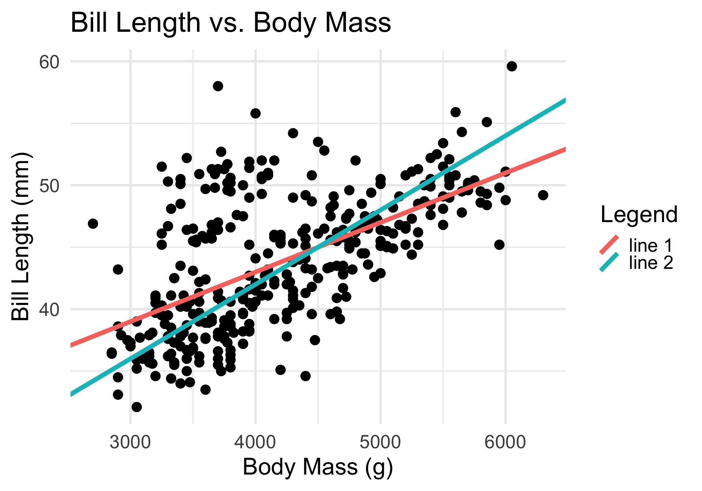
- Identifying these slope and intercept values by eye is next to impossible - this is why modeling is so useful!
Simple Linear Regression Model
Step 2: Fit the Model to the Data
Let’s find the optimal slope and intercept using the “loss” framework introduced in lecture yesterday.
Specifically, for each yi we believe there to be a “true response” value given by β0 + β1 xi, where β0 and β1 are the true slope and intercept.
- Given estimates b0 and b1 for β0 and β1, respectively, our “best guess” at this true response value is simply b0 + b1 xi.
So, adopting L2 loss, let’s take \(\mathcal{L}(y_i, b_0, b_1) := (y_i - b_0 - b_1 x_i)^2\) so that our empirical risk becomes
\[ R(b_0, b_1) = \frac{1}{n} \sum_{i=1}^{n} (y_i - b_0 - b_1 x_i)^2 \]
Simple Linear Regression Model
Step 2: Fit the Model to the Data
- Our “best” estimators are then those b0 and b1 values that minimize this above quantity.
- Such ideal estimators - namely, those that minimize empirical risk under squared loss - are called the ordinary least-squares (OLS) estimators/estimates in the context of SLR.
\[ \begin{pmatrix} \widehat{\beta}_{0, \ \mathrm{OLS}} \\ \widehat{\beta}_{1, \ \mathrm{OLS}} \end{pmatrix} := \argmin_{(b_0, b_1)} \left\{ \frac{1}{n} \sum_{i=1}^{n} (y_i - b_0 - b_1 x_i)^2 \right\} \]
- This is a simultaneous minimization problem in two dimensions, so we’ll need to take partial derivatives.
Simple Linear Regression
Step 2: Estimate Parameters
\[ R(b_0, b_1) = \frac{1}{n} \sum_{i=1}^{n} (y_i - b_0 - b_1 x_i)^2 \]
\[\begin{align*} \frac{\partial R}{\partial b_0} & = - \frac{2}{n} \sum_{i=1}^{n} (y_i - b_0 - b_1 x_i) \\ & = - \frac{2}{n} \left( n \overline{y}_n - n b_1 - n \overline{x}_n b_1 \right) \\ & = - 2 \left( \overline{y}_n - b_0 - \overline{x}_n b_1 \right) \end{align*}\]
\[\begin{align*} \frac{\partial R}{\partial b_1} & = - \frac{2}{n} \sum_{i=1}^{n} x_i (y_i - b_0 - b_1 x_i) \\ & = - \frac{2}{n} \left( n \overline{x}_n \overline{y}_n - n \overline{x}_n b_0 - b_1 \sum_{i=1}^{n} x_i^2 \right) \\ & = - 2 \left( \overline{x}_n \overline{y}_n - \overline{x}_n b_0 - \frac{1}{n} b_1 \sum_{i=1}^{n} x_i^2 \right) \end{align*}\]
Simple Linear Regression
Step 2: Estimate Parameters
\[\begin{align*} \overline{y}_n - \widehat{\beta}_0 - \overline{x}_n \widehat{\beta}_1 & = 0 \\ \overline{x}_n \overline{y}_n - \overline{x}_n \widehat{\beta}_0 - {\textstyle \frac{1}{n} \widehat{\beta}_1 \sum_{i=1}^{n} x_i^2 } & = 0 \end{align*}\]
- We call these the normal equations. When solved, they reveal:
\[ \widehat{\beta}_0 = \overline{y}_n - \widehat{\beta}_1 \overline{x}_n; \qquad \widehat{\beta}_1 = r \cdot \frac{s_Y}{s_X} \] where sX and sY denote the sample variances of the x and y values, respectively, and \[ r := \frac{1}{n - 1} \sum_{i=1}^{n} \left( \frac{x_i - \overline{x}_n}{s_X} \right) \left( \frac{y_i - \overline{y}_n}{s_Y} \right) \] denotes Pearson’s Correlation Coefficient.
Simple Linear Regression
Empirical Verification
- The function
lm()- which stands for linear model - performs the model fitting step (under L2 loss) for us.
Penguins
The Fitted SLR Model
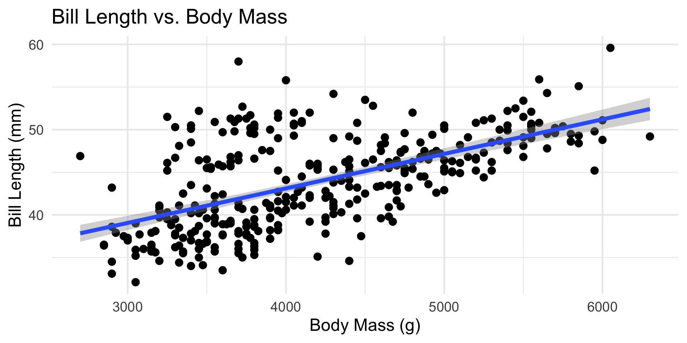Model Diagnostics
- Finally, let’s talk a bit about the third step in the modeling process: assessing model fit (sometimes called performing model diagnostics).
- Personally, I believe this is perhaps the most important step in the entire process!
- Recall that the main goal of model diagnostics is to assess whether we believe our initial model (from step 1) is doing any good.
- To stress: even though, in step 2, we “optimized” our model, we are only optimizing under the model we picked. This says nothing about whether our choice of model was any good!
Model Diagnostics
Example: Poor Choice of Model
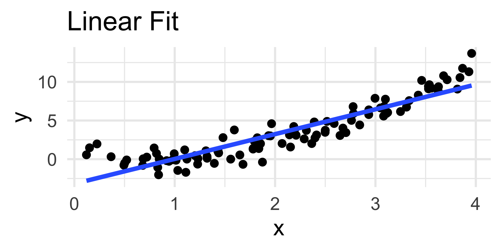
- For example, consider the simulated data to the left.
- The true relationship appears highly nonlinear; nevertheless, we have fit a linear model to the data.
- The coefficients of the linear fit are “optimal” - they minimize risk under squared-error loss!
- In other words, the blue line is the line of best fit to the data.
- But, visually, we believe that this line is not doing a good job of capturing the overall trend in the data.
Model Diagnostics
Residuals
There are a wide variety of tools and techniques that can be used for model diagnostics.
- You’ll learn about some these tools in classes like PSTAT 126 and PSTAT 131/231.
For the purposes of PSTAT 100, we will focus primarily on one specific type of diagnostic tool, known as a residuals plot.
The residuals are defined as \(e_i := y_i - \widehat{y}_i\), where \(\widehat{y}_i\) is the predicted true response (i.e. point along the fitted signal).
- In a sense, they are our attempt at modeling the noise in the data.
Model Diagnostics
Residuals
If our fitted values \(\widehat{y}_i\) capture the signal function perfectly - i.e. if \(\widehat{y}_i = f(x_i)\) for the true signal function \(f(\cdot)\), the residuals becomes \[ e_i = y_i - \widehat{y}_i = (f(x_i) + \varepsilon_i) - f(x_i) = \varepsilon_i \]
That is, if our model is capturing the signal perfectly, then our residuals should behave exactly like noise (which we have assumed is zero mean and possesses constant-variance).
So, the basic idea behind a residuals plot is to plot the residuals, and see how closely they resemble noise!
Model Diagnostics
Residuals
- Now, we should be a bit more careful about what we mean by “noise.”
- To that end, let us return to our SLR model:
yi= β0 + β1xi+ εi
- To that end, let us return to our SLR model:
- We make two assumptions about εi:
- Zero-Mean: ùîº[Œµi] = 0
- Homoskedasticity: Var[εi] = σ2, independent of i
- Sometimes we will substitute the following assumption in place of the two above: \[ \varepsilon \iid \mathcal{N}(0, \sigma_0^2) \]
Residuals Plots
In a residuals plot, we plot the residuals on the vertical axis and the fitted values on the vertical axis.
A residuals plot indicative of a well-fitting model should display:
- No discernable trend
- Homoskedasticity
On the flipside, a residuals plot missing one or both of these attributes is indicative of a poorly-fitting model.
Let’s take a look at a few examples.
Residuals Plots
Examples

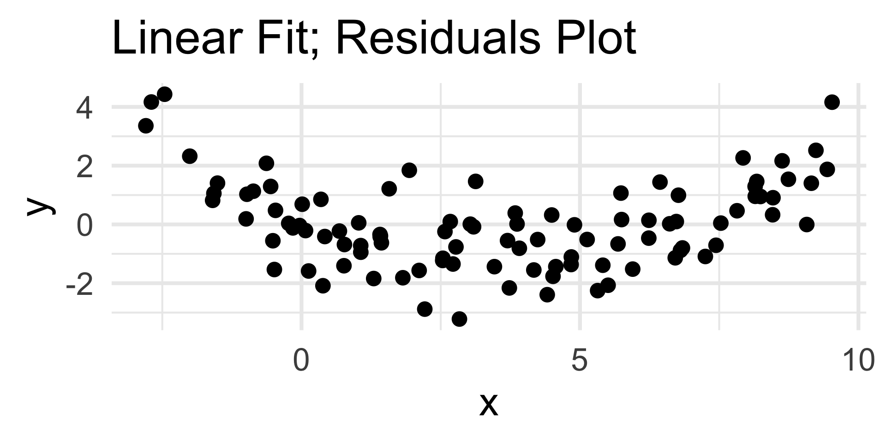
- The residuals plot displays a clear quadratic trend, indicating a poor choice of model.
- The scatterplot on the left confirms this.
- Note that the nature of the trend in the residuals plot is indicative of the portion of the model missing; we’ll return to this in a bit.
Residuals Plots
Examples
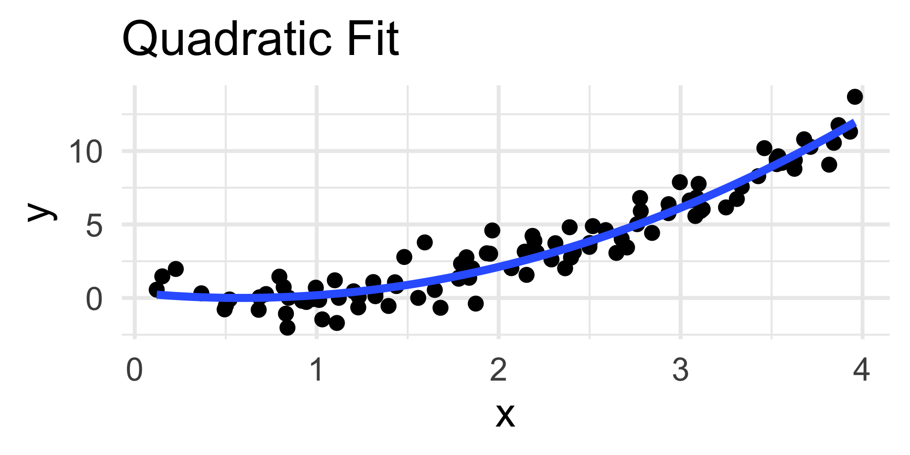
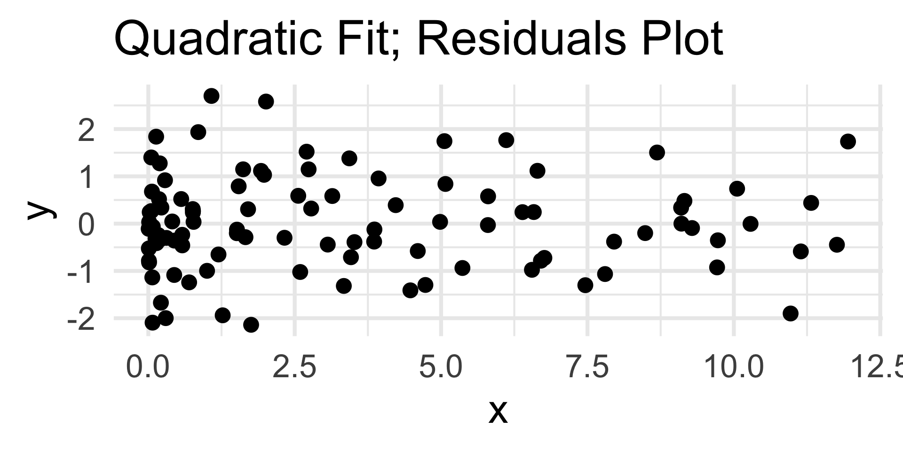
- Now, the residuals plot displays no discernable trend along with homoskedasticity.
- This indicates that our choice of quadratic fit was good; certainly in comparison to the linear fit.
Diagnostic 1
Trend in Residuals
As noted, the presence of trend in the residuals plot indicates a poor choice of model.
Indeed, it is not a coincidence that a linear fit to quadratic data displays a quadratic trend in the residuals plot.
Suppose the true model is quadratic:
yi= β0 + β1xi+ β2xi2 + εiFurther suppose we fit a linear model: ŷ
i= α0 + α1xi+ εiThe residuals then take the form:
ei= (β0 - α0) + (β1 - α1)xi+ β2xi2 + εiEven if α0 matches perfectly with β0 and α1 matches perfectly with β1, the residuals will still have a β2
xi2 term left over.- In other words, the expectation of
eiwill be quadratic inx.
- In other words, the expectation of
Misspecified Model
Trend in Residuals
Moral
If the residuals plot displays a trend of the form g(ŷ) for some function g, consider incorporating a term of the form g(x) into the original model.
Your Turn!
When a simple linear regression model is fit to a particular dataset, the resulting residuals plot is:
Propose an improved model, and justify your choice of improvement.
03:00
Live Demo!
Live Demo!
Using the penguins dataset, let’s fit a linear model of bill depth as a function of body mass; we’ll then generate a residuals plot and decide on whether we believe a linear model was appropriate or not.
Diagnostic 2
Heteroskedasticity in Residuals
The other type of “problem” we might encounter in a residuals graph is heteroksedasticity (i.e. nonconstant variance).
There are a couple of different ways to address heteroskedasticity, most of which I’ll leave for your future PSTAT courses to discuss.
- For the purposes of PSTAT 100, you should just be able to identify the presence of heteroskedasticity from a residuals plot
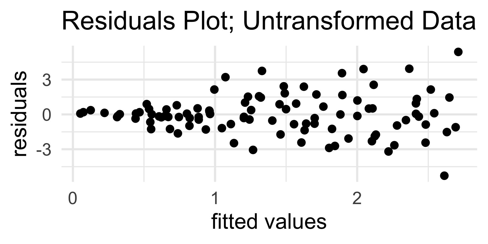

Why Model?
Prediction
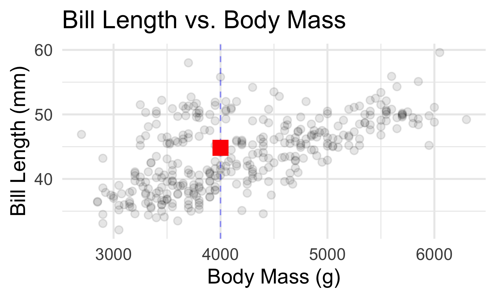
- What’s the true (de-noised) bill length (in mm) of a 4000g penguin?
Inference
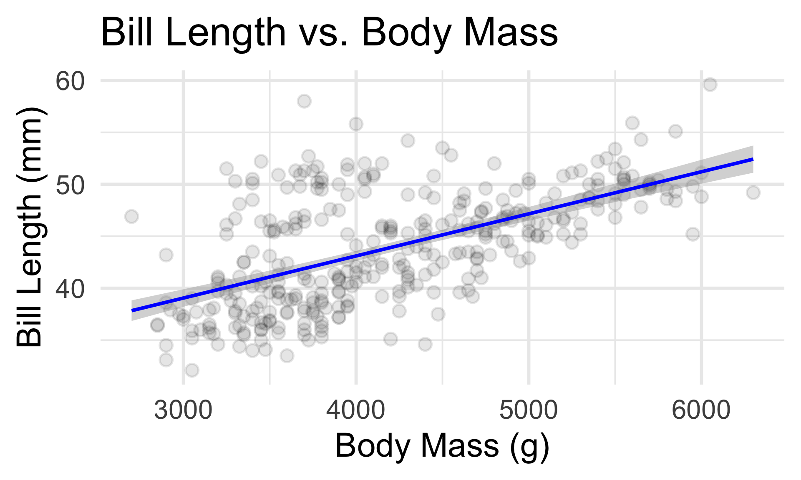
- How confident are we in our guess about the relationship between bill length and body mass?
Prediction: Example
gentoo <- penguins %>% filter(species == "Gentoo")
lm1 <- lm(bill_depth_mm ~ body_mass_g, gentoo)
(y1 <- predict(lm1, newdata = data.frame(body_mass_g = 5010))) 1
14.88971 Code
gentoo %>% ggplot(aes(x = body_mass_g,
y = bill_depth_mm)) +
geom_point(size = 4, alpha = 0.4) +
theme_minimal(base_size = 24) +
annotate("point", shape = 15, x = 5010, y = y1, col = "red", size = 6) +
xlab("body mass (g)") + ylab("bill depth (mm)") +
ggtitle("Bill Depth vs. Body Mass",
subtitle = "Gentoo Only")Prediction: Example
- For a general statistical model
yi=f(xi) + εi , a prediction for the true response value at an inputxis given by first estimatingf(either parametrically or nonparametrically) by \(\widehat{f}\), and then returning a fitted value \[ \widehat{y}_i := \widehat{f}(x) \]
Dangers of Extrapolation
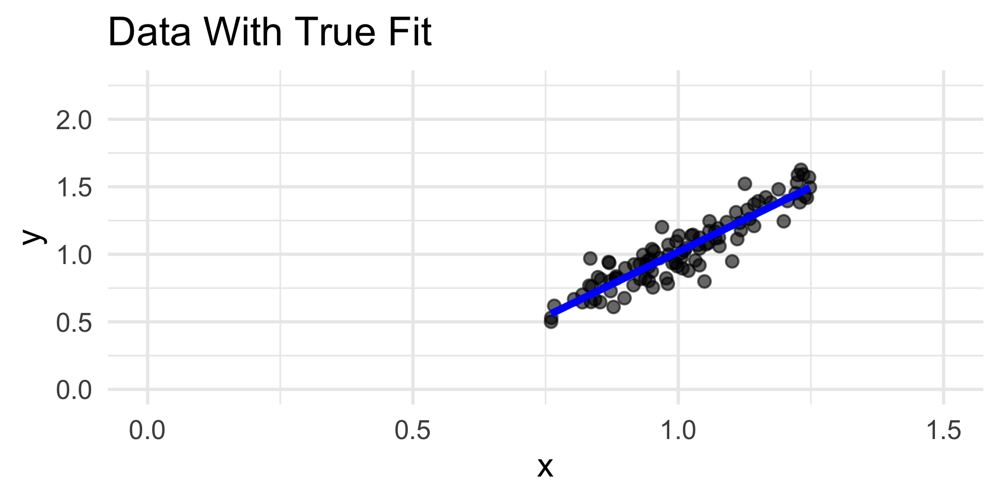
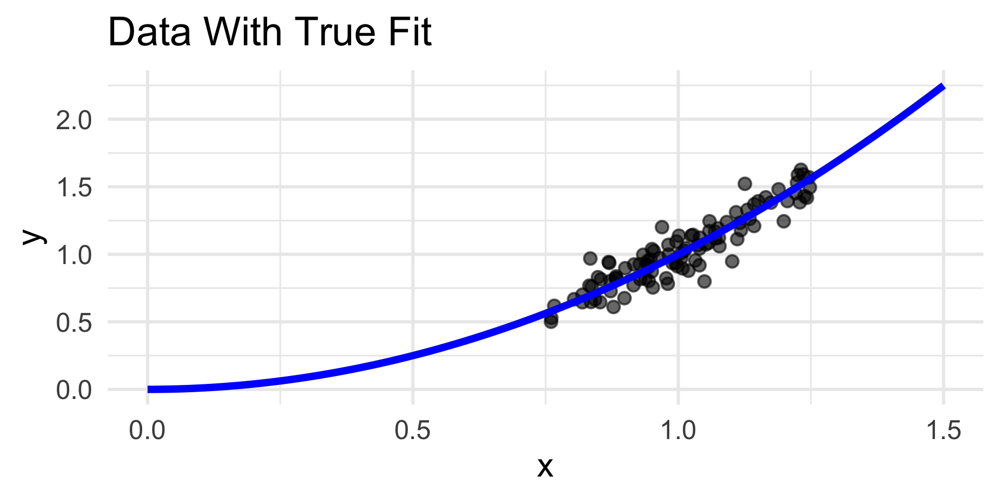
- Our “optimal” model fit is only optimal for the range of data on which it was fit.
- Extrapolation (predicting based on predictor values far outside the range originally observed) assumes that our proposed model holds even far outside the range of data we initially observed - an assumption that is very dangerous to make.
- So, don’t do it!
Dangers of Extrapolation
bill_length_mm body_mass_g
Min. :32.10 Min. :2700
1st Qu.:39.23 1st Qu.:3550
Median :44.45 Median :4050
Mean :43.92 Mean :4202
3rd Qu.:48.50 3rd Qu.:4750
Max. :59.60 Max. :6300
NA's :2 NA's :2
- The
summary()function provides (among other things) a good way to check the range of covariate (and response) values.
Inference
Let’s now discuss inference on the SLR model.
The OLS estimators (recall the distinction between an estimate and an estimator) are given by \[ \widehat{B}_0 = \overline{Y}_n - \widehat{B}_1 \overline{X}_n; \qquad \widehat{B}_1 = \frac{\sum_{i=1}^{n}(X_i - \overline{X}_n)(Y_i - \overline{Y}_n)}{\sum_{i=1}^{n}(X_i - \overline{X}_n)^2} \]
One can show these are unbiased estimators for the true slope and intercept β0 and β1, respectively.
If we assume the errors in the model are normally distributed, one can show that the standardized OLS estimators follow a tn-2 distribution.
Inference
Regression Tables
Call:
lm(formula = y ~ x)
Residuals:
Min 1Q Median 3Q Max
-3.06033 -0.54038 0.05607 0.77025 2.02609
Coefficients:
Estimate Std. Error t value Pr(>|t|)
(Intercept) 0.36060 0.10755 3.353 0.00114 **
x 1.40672 0.09971 14.109 < 2e-16 ***
---
Signif. codes: 0 '***' 0.001 '**' 0.01 '*' 0.05 '.' 0.1 ' ' 1
Residual standard error: 1.072 on 98 degrees of freedom
Multiple R-squared: 0.6701, Adjusted R-squared: 0.6667
F-statistic: 199.1 on 1 and 98 DF, p-value: < 2.2e-16- This is an example of a regression table.
Inference
Regression Tables
Coefficients:
Estimate Std. Error t value Pr(>|t|)
(Intercept) 0.36060 0.10755 3.353 0.00114
x 1.40672 0.09971 14.109 < 2e-16
The Estimate column provides the actual OLS estimates, given the data.
The Std. Error column provides the standard errror (i.e. standard deviation) of the OLS estimators, given the data.
The t Value column provides the observed value of \(\widehat{B} / \mathrm{se}(\widehat{B})\), which, assuming the true coefficient is zero, follows a t distribution with (n - 2) degrees of freedom.
Hm… what’s this doing?
- Based on this (and perhaps some additional work), what is a 95% confidence interval for the true slope?
Inference
Regression Tables
- We saw something like
Pr(>|t|)in Lab yesterday. What context was that in, and what did this quantity mean in that context?
Inference
Trend or Not?
Wouldn’t it be nice to statistical test whether or not there even is a linear relationship between the response and covariate?
Thankfully, there is one! Specifically, in the SLR model, which parameter controls/captures the linear relationship between
xandy?So, testing whether or not there is a trend is analogous to testing the null H0: β1 = 0 against the alternative HA: β1 ≠ 0.
This is why the sampling distributions of the OLS estimators is useful - it allows us to construct a hypothesis test for whether or not a linear association exists between
xandy.
Inference
Trend or Not?
- The final column in the regression table provides a p-value for the test of H0: β1 = 0 against the two-sided alternative HA: β1 ≠ 0.
Call:
lm(formula = y ~ x)
Residuals:
Min 1Q Median 3Q Max
-2.05195 -0.43265 -0.07854 0.48583 1.93858
Coefficients:
Estimate Std. Error t value Pr(>|t|)
(Intercept) 0.01145 0.07929 0.144 0.885
x -0.10537 0.07807 -1.350 0.180
Residual standard error: 0.7929 on 98 degrees of freedom
Multiple R-squared: 0.01825, Adjusted R-squared: 0.008229
F-statistic: 1.821 on 1 and 98 DF, p-value: 0.1803Next Time
Tomorrow, we’ll start generalizing from only one covariate to multiple covariates.
- This is going to involve some linear algebra!
We’ll also get some hands-on practice with the
Rside of regression, and further practice with interpreting results.Reminder: please don’t forget to turn in HW02 this sunday!

PSTAT 100 - Data Science: Concepts and Analysis, Summer 2025 with Ethan P. Marzban